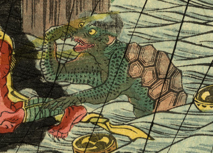

雷神を川中へ引きずり込もうとする河童。頭には皿があり、甲羅を背負っている。肌は緑色で、全身に鱗が生えている。
著作者：廣景／出典：親書誌：U426_nichibunken_0333：両國の夕立；リョウゴク ノ ユウダチ／日付：2014／資源識別子：U426_nichibunken_0333_0002_0000
Copyright (c)2010- International Research Center for Japanese Studies, Kyoto, Japan. All rights reserved.